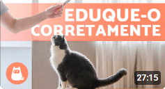

Para conseguir gatos para sua casa, você pode adotar alguns ou comprar de outras pessoas, normalmente é mais indicado adotar gatos, mas varias pessoas preferem comprar por causa de ser quase sempre filhotes.
Você também pode assistir videos para enteder melhor, tenho dois conselhos de video:

Também existem sites para Conseguir Gatos como esse daqui:
OLX